Inspect with InSight
Poorly tuned loops and malfunctioning field devices can jeopardize product quality and, quite often, production or yield. Therefore, the ability to inspect control and measurement loops quickly is of primary importance. InSight provides advanced process monitoring that allows under-performing loops and malfunctioning field devices to be identified instantly. In providing this advanced capability, InSight takes full advantage of the fieldbus block architecture supported in the DeltaV system. A Bad, Uncertain, or Limited measurement, downstream limitations in control, and incorrect mode of operation are automatically determined based on block mode and status of block parameters. In addition, the Input/Output function blocks (AI, AO, DI, DO, and PIN) and Control function blocks (DC, FLC, MPC, PID, and Ratio) include two parameters that are provided to support performance monitoring. These parameters are updated automatically without any extra block configuration. Since most calculations required for performance monitoring are done in function blocks, this approach greatly simplifies InSight and reduces network traffic between controller and workstation.
The InSight user interface provides indices that quantify loop utilization, measurements with a Bad, Uncertain or Limited status, limitations in control action, process variability, and availability of recommended tuning. In addition, the Overview page shows control performance and utilization for a selected area, unit, or cell.
InSight performance monitoring contains the following features:
- Innovative loop performance and loop utilization monitoring techniques
- Easy custom settings
- Summary results presented in a graphical way (bar graph) for hour, shift, and day
- Easy access to detailed results for modules and blocks and device alerts
- Guidance for improving performance
- An easy-to-use user interface
From the user interface you can monitor the performance of the entire plant or any part of the plant of particular interest. DeltaV also includes an Inspect function block and an Inspect dynamo. Operators can use the function block to enable and disable areas and make utilization information available for viewing, plotting, adding to history, and so on. The dynamo can be used to provide operators easy access to data.
Reporting Loop Utilization and Performance
InSight consists of one server and multiple clients. The server is the central collection point for the information obtained from the DeltaV controllers. The server calculates the percent time an abnormal condition is present for hour/shift/day, compares the results of these calculations with percent time limits you set to detect an abnormal condition or an under-performing loop, and provides this information to clients for viewing upon request. The clients (Inspect with InSight) can access information only through the server.
The existence of an abnormal condition is determined within the controller based on function block parameters in the controller (such as measurement status, back calculation input status, standard deviation, tuning index, and mode). The state of these monitored conditions are automatically reported to the DeltaV Inspect server on an exception basis. This server is located on the DeltaV ProfessionalPLUS workstation. The server calculates the percent time a condition is active and flags it if the value is above a maximum percent time limit. These results can be accessed through any DeltaV Inspect client.
The status and actual mode parameters are used by the function block to determine incorrect mode, Limited control, and Bad, Limited, or Uncertain measurement status. Other parameters are used within the block to calculate standard deviation, Tuning and Variability Index, and to determine if these values exceed limits set for the block. These conditions are communicated in a single parameter to the server only when a monitored condition changes state. Therefore, the communication load for reporting these parameters is usually very small.
When the DeltaV Inspect Server is initially placed online, the current state of all monitored conditions is reported to the DeltaV InSight server by the DeltaV controller. From that point on, these parameters are reported by the controller only if one of the monitored conditions changes state.
Loop Performance Calculations
This section provides details about the calculations performed by the DeltaV control blocks to evaluate control performance. Read this topic if you are interested in how these calculations are performed.
A Variability Index (VI), a measure of the quality of control, is calculated in all DeltaV Control blocks.
If Process Learning is enabled for a PID block and a process model has been automatically identified, the function block will calculate a Tuning Index. The Tuning Index indicates the potential for improving control performance by updating controller tuning according to the identified process mode; and the selected or default tuning rule.
Through the Variability and Tuning Index calculations, you can better judge the performance of plant control. These calculated performance measurements can be viewed at DeltaV workstations that support DeltaV InSight clients. InSight identifies Control blocks, whose Variability Index and total standard deviation exceeds the configured limits. In Control function blocks, the total standard deviation and capability standard deviation are calculated. Based on these two values, Variability Index is calculated in the function block and compared to a limit. These conditions determined in the block are reported to the DeltaV InSight server where the condition becomes visible if it persists longer than the specified percent (%) time limit for high variability.
In the InSight server, overall control performance is calculated as follows:
Performance = 100-Average % time high variability as reported by the block.
VI - Variability Index
The overall control utilization is as follows:
Utilization = Average Percent Time Control blocks were in Normal Mode%
To support the performance calculations performed in the Control function blocks (FLC, MPC, MPCPro, PID, and Ratio) and fieldbus devices, calculate σcap, σtot, and VI. σcap and σtot are visible parameters (STDEV and STDEV_CAP respectively) of these function blocks. The block parameter STDEV_TIME determines the time frame over which these calculations are performed.
Calculations in Function Blocks
The I/O function blocks (AI, AO, and PIN) and Control function blocks (FLC, MPC, MPCPro, PID, and Ratio) in DeltaV controllers and fieldbus devices support the STDEV and STDEV_CAP parameters, σtot and σcap. These intermediate calculations are done each time one of these function blocks execute. After N executions of the function block (where N = 120) or two minutes (whichever is longest), the parameter values are updated.
The total standard deviation, σtot, is calculated using "moving time window computation" based on N=120 executions of the function block and the time horizon (in seconds) defined by STDEV_TIME as follows:
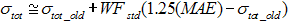
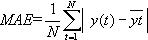
= mean absolute error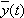
is the function block output mean valueWFstd = 120/((STDEV_TIME/module execution period) + 120) = standard deviation filter factor
σtot_old = Previously calculated value of σtot
The PV is used in the I/O block to calculate the mean values as follows based on N=30 executions of the function block and the time horizon defined by STDEV_TIME.
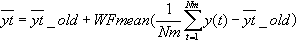
Where:
WFmean = 30/((STDEV_TIME/module execution period) + 30) = mean value filter factor
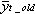
= Previously calculated mean value of the function block outputIn Control blocks, either the working setpoint or PV is used, depending on the block mode.
The capability standard deviation, σcap, is calculated as follows:
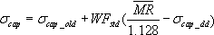
Where:
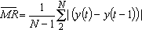
= average moving rangeσcap_old = Previously calculated value of σcap.
Only the summing component associated with the mean absolute error (MAE) and moving range (MR) is computed at each execution of the function block. The parameter STDEV_TIME should be set to match the time response for the process (in seconds) and by default is set to zero.
After calculating σcap and σtot, the Variability Index (VI) is computed from the following formulas:
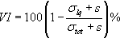
Where
S is the sensitivity factor that makes calculations stable; S=0.1% of the variable scale.
σtot is the actual measured standard deviation.
σlq is the minimum standard deviation that can be achieved with feedback control. σlq is defined as:
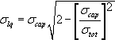
σcap is the estimated capability standard deviation (measurement of short-term variation)
The Tuning Index is based on the variability difference estimate for the current controller tuning (PID1) and the model-based desired controller tuning (PID2).
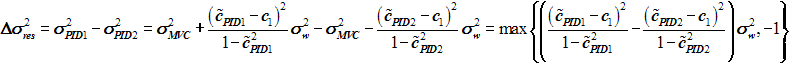
The Tuning Index indicates the potential for improving control performance and is defined as the ratio of the potential non-compensated PID variability reduction to the actual PID non-compensated variability, for example:
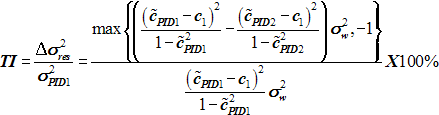
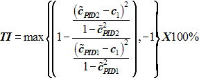
In the implementation, the standard deviation's ratio is used instead of the variances ratio which results in the formula:
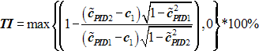
The Tuning Index estimates how much PID variability can be reduced by applying model-based tuning. The Tuning Index calculation requires estimates for process model parameters
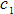
,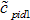
,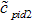
as described here: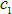
is the parameter of the assumed noise Z-transform model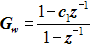
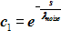
where λnoise is white noise filter time constant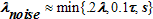
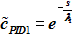
where λ1 is the closed loop time constant for the current PID tuning. An estimate of the closed loop time constant could be back-calculated from the tuning formula: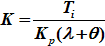
as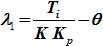
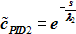
where λ2 is the desired closed loop time constant for a new tuning that can be defined from the process model time constant and lambda factor as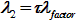
.Calculations for the integrating process are:
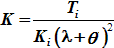
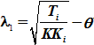
and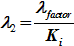
Where:
K is PID controller gain
Ti is PID integral time (reset)
Kp is self-regulating process gain
Ki is integrating process gain
θ is process deadtime
Identification of Under-Performing Loops
The following block measurement and processing conditions are automatically identified by InSight based on block mode and parameter status:
Mode Incorrect - The actual mode of the block does not match the Normal mode configured for the block. This can be caused by the operator changing the target mode because of poor response or equipment malfunction.
Limited Control (Action) - BKCAL_IN status of the block is either high limited or low limited, indicating that a block downstream from the control block has reached a setpoint or output limit. Such limitations can prevent the loop from achieving or maintaining setpoint. Limiting is detected through BKCAL_IN only if the block is wired to another block such as AO. If a PID block with direct I/O is used, limiting is detected through BKCAL_OUT. The limited condition is suppressed if this block is not selected by the downstream block because the downstream block should be flagged for incorrect mode.
Uncertain Input - The status of the block process variable (PV parameter) is Bad, Uncertain or Limited. A sensor failure, miscalibration of the measurement range, or measurement diagnostics have detected a condition that requires attention by maintenance.
High Variability - Standard deviation and the Variability Index calculated by the block exceed their default configured limits.
Tuning Recommendation is Available - The Tuning Index calculated by the block exceeds its default or configured limit.
The percent of the time that these conditions exist over an hour, a shift, or a day is computed for every block by the DeltaV Inspect Server and compared to a configured global limit for each condition. When one of these limits is exceeded, the associated module is displayed in InSight.
Identification of Malfunctioning Devices
InSight monitors devices for the following device diagnostics values:
- Advisory Device Count
- Maintenance Device Count
- Failed Device Count
- Comm Fail Device Count
- Total Device Count
The diagnostic values are sent to the Inspect block as totals for the time period. For the Now time frame, the value is 0 or 1. For all other time frames, the values is the total count of the time the value was true. For large systems, this will typically be the number of minutes in the time frame. However, for small systems where there are fewer than 60 modules enabled, there may be more than one read per minute. This is similar to how data is polled for other items.
These values are available to InSight directly from devices that support PlantWeb rules (fieldbus devices, for example). No additional configuration is required. For other devices, use the Diagnostic function block to access device diagnostic information and make it available to InSight. Parameters that indicate device diagnostic information can be wired to the Diagnostic block directly or processed by other blocks first, if necessary.
When you use Diagnostic blocks it is important to give each block a unique name. It is recommended that you name the Diagnostic blocks the same as the device the block refers to. Because the Devices page does not include the module name in which a Diagnostic block resides, this naming convention eliminates duplicate names and gives operators more meaningful information.